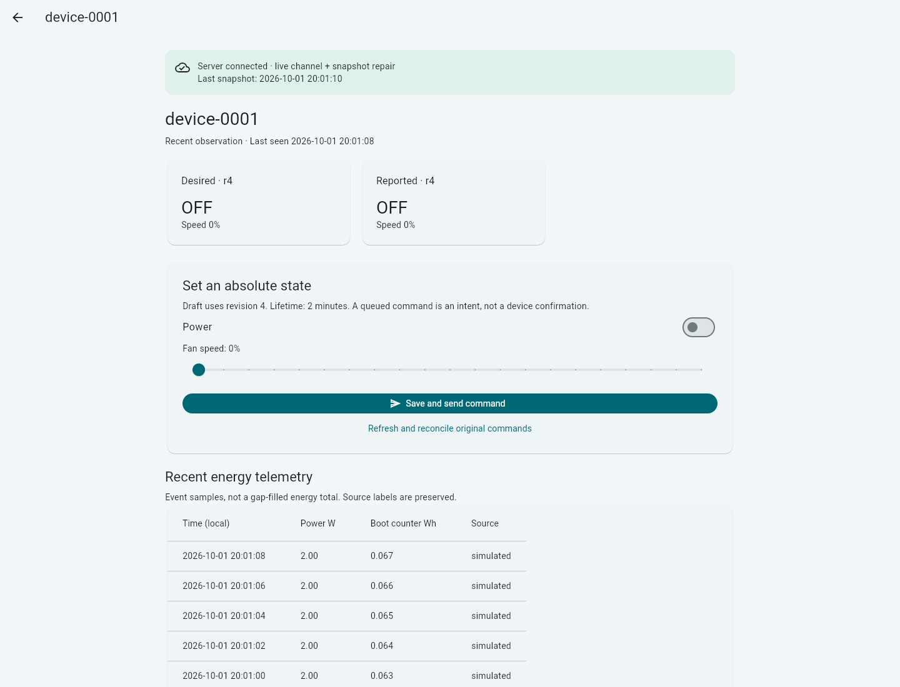

Software and simulator edition / October 2026
Appliance Energy
Reliable device control and
energy decisions with visible uncertainty.
A fictional appliance-service engagement
Yash Verma
Business brief
Investigation and demand planning
Which devices deserve investigation, and how much energy should we expect next week?
| Evidence | Decision it qualifies |
|---|---|
| Energy with observation coverage | Which devices to investigate first |
| Confirmed versus unknown outcomes | Whether operator follow-up is needed |
| Forecast error and uncertainty | Which demand estimate to use |
Simulation supports software testing. Real savings and fault prevention require a measured intervention study.
Control demonstration
One command identity survives reconnection
The browser saves an absolute setpoint before sending.
Offline → page reload → reconnect preserved the UUID. A matching device report then confirmed it.
Missing evidence remains unknown. Retries do not create another logical command.

Evidence: browser validation and the real HTTP/TLS MQTT smoke test. Physical actuation is outside this edition.
Data and reporting
Governed energy accounting
Immutable telemetry batches feed bronze, silver and gold Delta tables, with observation coverage retained.
| Databricks reference dataset | Observed result |
|---|---|
| Unique simulated events | 40,322 |
| Daily gold rows matched to the local oracle | 142 |
| Covered energy, unchanged on replay | 221,277.67265636 Wh |
Cloud Delta results match the local oracle. Selected Unity Catalog lineage edges were inspected. Desktop CSV values were independently queried. The operator confirmed native cloud-report refresh.
Forecast evaluation
The seasonal baseline outperformed the challenger
Untouched temporal holdout MAE, Wh per day. Two synthetic 70-day histories.
| Device | Seasonal-naive | Ridge challenger |
|---|---|---|
| fixture-1 | 148.26 | 390.37 |
| fixture-2 | 167.46 | 444.30 |
Retain the baseline. Keep the negative experiment.
Calibration selected ridge; holdout results did not support promotion. Longer-horizon intervals remain provisional. This does not measure real appliance demand accuracy.
Recommendation
Proceed with a measured pilot
- Preserve operator reconciliation and explicit data coverage.
- Keep seasonal-naive as the reference forecast.
- Review model-generated SQL: the stronger local model answered 11/12 business cases correctly, but one used the wrong unit.
- Test power cuts and update rollback on an ESP32, then collect measured sensor data.
All six unsupported/hostile requests were refused by the stronger model. This small fixed evaluation is not a general accuracy guarantee. Physical appliance behavior and energy-saving outcomes remain unverified.